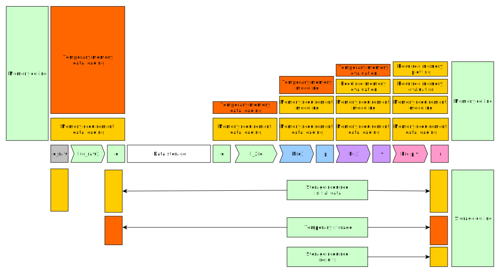

Chapter 4: Scaling¶
Different resources involved in data analysis pipelines¶
Modern data analysis pipelines can be very expensive computationally. In order to scale these pipelines up, we’ll need to first understand the resources that these pipelines require. These resources are:
Processors (CPUs)
Memory (RAM)
Storage space
Let’s look at them one by one. At the end we’ll collect the best practices into a table.
Processors as a resource¶
Processor is the quintessential resource when it comes to data analysis. It is used throughout the pipeline from data loading to data analysis and thus it is important to know some features about them.
Cores vs threads¶
Modern processors are built from multiple cores. Sometimes these cores can house multiple threads. This is called hyperthreading.

We’ll look at CPU parallelization techniques later on, but for now it’s important to know that the maximum number of threads/processes you should launch on a given CPU is the number of threads/cores that are available. If you launch a larger number, you will oversubscribe the CPUs and the code will run slower as different threads/processes will have to swap in/out of the CPUs.
Processor cache¶
Operations on data are done with instructions inside the cores. These instructions do calculations such as addition, multiplication etc.. However, in order to get maximum throughput of finished instructions, all modern CPU architectures have multiple layers of data caching and prefetching that try to keep the calculating parts of the CPU as busy as possible.
Data is read to the cache in blocks of data called cache lines. If required data is not found in the cache, the data needs to be loaded from the system RAM, which results in a significant performance penalty. This is called a cache miss.
This caching procedure can be helped by keeping the data in memory as a contiguous array. Both R vectors and numpy ndarrays are contiguous. They have so-called row-major-ordering. It is also important to keep this order in mind when doing operations with multidimensional arrays.
Vectorized instructions¶
Another important feature of modern processors is that they support vectorized instructions (AVX, AVX2, AVX512). These dramatically improve the performance when one does the same operation for multiple pieces of data e.g. elementwise addition. R, numpy and mathematical libraries that they use such as MKL, BLAS, LAPACK, FFTW etc. use these operations straight out of the box, if the program is written to use functions from these packages.

We can test the effect of vectorization by looking at the following example that adds to a zero array.
n_zeros = 10000
ntimes = 1000
z = np.zeros(n_zeros)
time_for_1 = time.time()
for t in range(ntimes):
for i in range(n_zeros):
z[i] = z[i] + 1
time_for_2 = time.time()
time_for = time_for_2-time_for_1
z = np.zeros(n_zeros)
time_vec_1 = time.time()
for t in range(ntimes):
z = z + 1
time_vec_2 = time.time()
time_vec = time_vec_2-time_vec_1
print("""
Time taken:
For loop: %.2g
Vectorized operation: %.2g
Speedup: %.0f
""" % (time_for, time_vec, time_for/time_vec))
Time taken:
For loop: 4.5
Vectorized operation: 0.0056
Speedup: 801
n_zeros <- 10000
ntimes <- 1000
z <- numeric(n_zeros)
time_for_1 <- Sys.time()
for (t in seq(ntimes)) {
for (i in seq(1,n_zeros)) {
z[i] <- z[i] + 1
}
}
time_for_2 <- Sys.time()
time_for <- time_for_2 - time_for_1
z <- numeric(n_zeros)
time_vec_1 <- Sys.time()
for (t in seq(ntimes)) {
z <- z + 1
}
time_vec_2 <- Sys.time()
time_vec <- time_vec_2 - time_vec_1
cat(sprintf("Time taken:\n\nFor loop: %.2g\nVectorized operation: %.2g\n\nSpeedup: %.2f", time_for, time_vec, time_for/as.double(time_vec, unit='secs')))
Time taken:
For loop: 0.61
Vectorized operation: 0.018
Speedup: 33.61
RAM as a resource¶
RAM stores the data and variables that you operate on during your data analysis workflow. From RAM the data is transferred to processor caches for operations. In data science pipelines the biggest problem is usually that one runs out of memory when dealing with big datasets.
Memory ceiling¶
When thinking about memory one should always think about the ceiling of memory
usage. Let’s say that during our input loading part I(x) of our pipeline
we read dataset d_raw e.g. from a csv and we convert/modify our columns
to obtain a dataset d. Now the size of the memory we need is
size(I(d_raw)) = size(d) + size(d_raw) and we know that this is our
memory ceiling for the data loading.
Let’s say that we keep the original dataset d_raw in memory through
our full pipeline. Then the memory ceiling of I(x) becomes a floor
for the next part of our pipeline and we start to accumulate memory even
though we no longer need some of our previous objects. This is visualized
in the image below:
Calculating memory usage¶
Let’s consider
boostrapping model
that the we had in chapter 3. We read our data into dataset
filesizes and then used aggregation functions to create another dataset
yearly_bytes_sum that we used for our bootstrapping procedure.
def chapter3_pipeline(n_means=10000):
filesizes = load_filesizes('../data/filesizes_timestamps.txt')
yearly_bytes_sum = aggregate_filesize_data(filesizes, ['Year','BytesLog2'], ['Files', 'SpaceUsage'], 'sum')
bootstrapped_yearly_means = bootstrap_byteslog2_mean(yearly_bytes_sum, 'Year', 'Files', n_means=n_means)
bootstrapped_yearly_means = bootstrapped_yearly_means.reset_index()[['Year','Mean']]
return bootstrapped_yearly_means
chapter3_pipeline(n_means=100).head()
Year Mean
0 2010.0 12.9242
1 2011.0 14.0712
2 2012.0 10.6465
3 2013.0 13.3474
4 2014.0 14.0410
chapter3_pipeline <- function(n_means=10000) {
filesizes <- load_filesizes('../data/filesizes_timestamps.txt')
yearly_bytes_sum <- aggregate_filesize_data(filesizes, c('Year','BytesLog2'), c('Files', 'SpaceUsage'), sum)
bootstrapped_yearly_means <- yearly_bytes_sum %>%
bootstrap_byteslog2_mean('Year', 'Files', n_means=n_means) %>%
select(Year, Mean)
return(bootstrapped_yearly_means)
}
head(chapter3_pipeline(n_means=100))
Year Mean
2010 12.9871
2011 14.1068
2012 10.7926
2013 13.3482
2014 13.9873
2015 11.7709
One can calculate the size of a dataset in the following fashion:
filesizes = load_filesizes('../data/filesizes_timestamps.txt')
yearly_bytes_sum = aggregate_filesize_data(filesizes, ['Year','BytesLog2'], ['Files', 'SpaceUsage'], 'sum')
print(filesizes.memory_usage(deep=True))
print(yearly_bytes_sum.memory_usage(deep=True))
filesizes_size = filesizes.memory_usage(deep=True).sum()
summarized_size = yearly_bytes_sum.memory_usage(deep=True).sum()
print("""
Original data: %d bytes
Summarized data: %d bytes
Reduction ratio: %.2f
""" % (filesizes_size, summarized_size, filesizes_size/summarized_size))
Index 69520
Bytes 69520
Files 69520
BytesLog2 69520
SpaceUsage 69520
Year 69520
Month 9768
Date 69520
dtype: int64
Index 128
Year 881
BytesLog2 2097
Files 3784
SpaceUsage 3784
dtype: int64
Original data: 496408 bytes
Summarized data: 10674 bytes
Reduction ratio: 46.51
filesizes <- load_filesizes('../data/filesizes_timestamps.txt')
yearly_bytes_sum <- aggregate_filesize_data(filesizes, c('Year','BytesLog2'), c('Files', 'SpaceUsage'), sum)
print_column_sizes <- function(dataset) {
map(colnames(dataset), function(x) print(sprintf('column: %12s size: %d', x, object.size(dataset[x]))))
invisible(NULL)
}
print('filesizes:')
print_column_sizes(filesizes)
print('yearly_bytes_sum:')
print_column_sizes(yearly_bytes_sum)
filesizes_size <- object.size(filesizes)
summarized_size <- object.size(yearly_bytes_sum)
cat(sprintf("
Original data: %d bytes
Summarized data: %d bytes
Reduction ratio: %.2f
", filesizes_size, summarized_size, filesizes_size/summarized_size))
[1] "filesizes:"
[1] "column: Bytes size: 70384"
[1] "column: Files size: 70384"
[1] "column: BytesLog2 size: 70392"
[1] "column: SpaceUsage size: 70392"
[1] "column: Year size: 70384"
[1] "column: Month size: 36872"
[1] "column: Date size: 70896"
[1] "yearly_bytes_sum:"
[1] "column: Year size: 3728"
[1] "column: BytesLog2 size: 5744"
[1] "column: Files size: 4336"
[1] "column: SpaceUsage size: 4344"
Original data: 455320 bytes
Summarized data: 15920 bytes
Reduction ratio: 28.60
From the output we can see the following things:
We can reduce the memory consumption by taking only those columns we’re interested in.
We can reduce the memory consumption by converting data with repeating values into categorical type (
Year).Converting numerical data with many categories (
BytesLog2) into categorical type can increase memory consumption.
Garbage collector¶
As mentioned previously, these past datasets become increasingly important when they are carried around throughout the pipeline. Both Python and R have a garbage collector that runs occationally and removes unneeded memory allocations. Each object has a reference counter that tells the garbage collector how many times the object is referenced. Each time you e.g. assign the object into a variable the reference counter is increased and each time you overwrite/delete a variable the reference counter is decreased. Once it reaches zero the garbage collector knows that the object can be removed.
To help garbage collector one can create parts of your pipeline as functions. By writing code as function all temporary variables are created to the function’s scope (aka. environment). After the function finishes they are no longer defined outside of the function and thus they are good for garbage collecting.
def memory_scope_test():
memory_scope_variable = np.random.random(1000)
print(memory_scope_variable.nbytes)
memory_scope_test()
print(memory_scope_variable.nbytes)
8000
---------------------------------------------------------------------------
NameError Traceback (most recent call last)
<ipython-input-41-6d1e9e06eb99> in <module>
5
6 memory_scope_test()
----> 7 print(memory_scope_variable.nbytes)
NameError: name 'memory_scope_variable' is not defined
memory_scope_test <- function(){
memory_scope_variable = runif(1000)
print(object.size(memory_scope_variable))
}
memory_scope_test()
print(object.size(memory_scope_variable))
8048 bytes
Error in structure(.Call(C_objectSize, x), class = "object_size"): object 'memory_scope_variable' not found
Traceback:
1. print(object.size(memory_scope_variable))
2. object.size(memory_scope_variable)
3. structure(.Call(C_objectSize, x), class = "object_size")
One can also call the garbage collector explicitly after removing a variable. However, this should be thought as a band-aid to memory problems and should only be used when there’s an obvious target for garbage collection (e.g. some subroutine was called and the memory used by it could be freed, a variable was explicitly removed, etc.)
This example requires the
memory_profiler-package.
It is included in the updated environment.yml, but can also be installed
by running pip install memory_profiler in a shell where the environment
is activated.
import gc
def memtest_nocollect(n=1000):
A = np.random.random(n**2)
A_mean = np.mean(A)
time.sleep(5)
B = np.matrix(np.random.random((n, n)) + A_mean)
B = B + B.T
B_inv = np.linalg.inv(B)
return np.max(B*B_inv)
def memtest_collect(n=1000):
A = np.random.random(n**2)
A_mean = np.mean(A)
del A
gc.collect()
time.sleep(5)
B = np.matrix(np.random.random((n, n)) + A_mean)
B = B + B.T
B_inv = np.linalg.inv(B)
return np.max(B*B_inv)
print(memtest_nocollect(100), memtest_collect(100))
1.0000000000000036 1.0000000000000249
%load_ext memory_profiler
%memit memtest_nocollect(3000)
peak memory: 572.32 MiB, increment: 343.27 MiB
%memit memtest_collect(3000)
peak memory: 435.05 MiB, increment: 206.00 MiB
library(pryr)
memtest_nocollect <- function(n=1000) {
print(mem_used())
A <- runif(n*n)
A_mean <- mean(A)
print('No garbage collection done.')
Sys.sleep(5)
B <- matrix(runif(n*n), ncol=n)
B <- B %*% t(B)
B_inv <- solve(B)
print(mem_used())
return(max(B %*% B_inv))
}
memtest_collect <- function(n=1000){
print(mem_used())
A <- runif(n*n)
A_mean <- mean(A)
rm(A)
print(gc())
Sys.sleep(5)
B <- matrix(runif(n*n), ncol=n)
B <- B %*% t(B)
B_inv <- solve(B)
print(mem_used())
return(max(B %*% B_inv))
}
memtest_nocollect(3000)
memtest_collect(3000)
62.4 MB
[1] "No garbage collection done."
278 MB
1.00000010849908
62.4 MB
used (Mb) gc trigger (Mb) max used (Mb)
Ncells 881669 47.1 1773930 94.8 1214762 64.9
Vcells 1626091 12.5 37149668 283.5 46639578 355.9
206 MB
1.00000000977889
By using these strategies we make it possible for the garbage cleaner to release memory during pipeline’s execution. This reduces our memory ceiling considerably.

Storage as a resource¶
Differences in different storage solutions¶
Storage solutions are often compared using the following metrics:
Capacity - The amount of data that can be stored. This is of course important for data analysis problems as more capacity allows for more datasets.
Random read/write speed - The speed of small read/write operations the storage system can do to at random. This is especially important when reading randomly from a file or when reading lots of small files.
Sequential read/write speed - The speed of reading large chunks of data at once. This is very important when reading/writing datasets that are stored in binary data formats.
Reliability - The reliability of the filesystem. Nothing is worse for data scientist than losing data.
There are multiple different types of storage systems and all of them have different strengths and weaknesses. Some important systems are:
Local SSDs - Most laptop and desktop computers nowadays have SSDs in them as their hard drives. These are very fast when it comes to disk access, but they usually do not have a big capacity and they are usually not backed up or duplicated.
Network file system (NFS) - Commonly used as
/home-directory for universities’ desktop machines. They are not the fastest when it comes to random or sequential access, but they usually have more capacity than hard drives and are backed up.Storage in high-performance computing (HPC) systems (Lustre etc.) - Work storage in HPC systems is usually designed for maximum capacity and maximum performance so they are ideal for large work data. They are best when accessed sequentially.
Object storage systems (OpenStack, cloud) - These systems are widely used to store big datasets/models for cloud computing and archive data. When using cloud computing the compute instances usually have local SSDs and object storage is used for long term storage. Due to the nature of the storage system there is rarely any random access so all access is to complete objects.
Table below tries to collect some of this information:
Storage system |
Capacity Capacity |
Random
speed
|
Sequential
speed
|
Reliability |
Best usage |
|---|---|---|---|---|---|
Local SSDs |
Small |
Great |
Good |
Low |
Temporary work disk |
NFS |
Medium |
Slow-Medium |
Slow-Medium |
High |
Storing initial datasets |
HPC storage |
Huge |
Medium |
Great |
Medium |
Work disk for big data |
Object storage |
Huge |
Low |
Good |
High |
Storing initial datasets,
completed models and results
|
Using storage space efficiently¶
Storage is often thought of in trivial terms: do I have sufficient storage space to house my initial data and my results. This kind of a pipeline is visualized below:
When working with a pipeline such as this one the main problem is to minimize the storage ceiling of the pipeline. This can be achieved by utilizing binary formats such as those described in chapter 2. Many advanced formats can utilize compression algorithms that reduce the amount of storage space needed. Choice of storage format usually depends on the structure of the data, support for the storage format in the frameworks and the access pattern to the data.
Accessing storage effectively¶
When working with big datasets one needs to be mindful of the data access pattern that the code uses. This is especially important when using an access pattern on a file systems that is not designed to handle that type of an access pattern.
Access pattern here means the following:
How many files need to be read/written?
What is the size of a chunk that is read/written by data access operations?
How often are read/write operations done?
As an example, working with large CSV files can cause problems as most text reading/writing backends use small buffers (4-64kB). This means that to read/write a big file, a huge number of filesystem operations needs to be done. This can be mitigated by switching to a better reading library or to binary data formats that usually use buffer sizes of multiple MBs.
Another case is deep learning, where data is usually provided in huge number of small files (images, text files). Storing pre-shuffled datasets in e.g. Parquet format and accessing them chunk at a time can greatly improve data loading and training performance.
The following rules of thumb work for most cases:
Once you have loaded data, do as much as you can with it.
Avoid having lots of small files.
Avoid huge files (over 100GB).
Split your data so that each file can be analyzed independently.
Use existing readers/writers.
Read/write only relevant data.
Read/write data in big chunks.
Do not read randomly from a file. Shuffle data by shuffling indixing arrays, not the data itself.
Do not write results in a constant stream if its not human-readable status information. After the program has done something meaningful, collect output into chunks and write it as a whole.
If you need to get random subsets of huge data (more than there’s memory), create a randomly shuffled file and read it chunk at a time.
Storage as a balancing resource¶
Storage can also be used to reduce the resource costs of other parts of the pipeline. Let’s consider the pipeline presented below:

In the example pipeline the data loading part requires huge amounts of temporary memory. This increases the memory ceiling of the pipeline. When running pipelines such as this in HPC cluster or cloud infrastructure this extra memory requirement can reduce pipeline’s job priority or increase the cost of the required cloud instance. This is especially problematic if the data pre-processing is identical in every run of this pipeline.
In situations like the one described before storage can be used as a balancing tool. If after preprocessing the preprocessed dataset is stored into storage we will reduce the required memory ceiling by increasing our storage ceiling.
This is by no means the only situation where temporary storage is important. Temporary storage can be useful in any of the following situations:
Splitting data preparation and data modeling to two different parts that can be run independently.
Creating subsets from huge initial dataset.
Saving model parameters after training your model / running your analysis.
As a generic rule one can use the following: Did my program just do something that is either
Costly to replicate (time- or resourcewise)
Unnecessary to do more than once and its results can be used more than once.
If answer to either of the results is yes, you might have a case for using temporary storage to split your pipeline.
Best practices¶
Resource |
Best practice |
Implementation strategies |
|---|---|---|
CPU |
Do not oversubscribe
the CPU.
|
Limit the number of processes /
threads to the amount that CPU
can support.
|
CPU |
Try to avoid cache
misses.
|
Keep important data in
columns or numeric vectors
(vector/array, ndarray).
|
CPU |
Use vectorization.
|
Operate on vectors using basic
operators when possible. Use
existing functions from
libraries if possible.
|
RAM |
Only keep data
that will be used
later on by the
pipeline.
|
Select only relevant rows and
columns. Use storage to skip
unnecessary preprocessing steps.
Use nested dataframes if your
data doesn’t fit to the tidy
data format. When dealing with
time series data resample it to
relevant time scale. Minimize
data concatenation operations.
|
RAM |
Keep data in good
data types.
|
Use integers/floating point
numbers for numeric data. Use
categories for columns where it
brings benefits. Turn dates to
proper date objects.
|
RAM |
Release temporary
variables after they
are no longer
needed.
|
Use functions to do
calculations. Don’t keep
unneeded variables in the global
scope.
|
RAM |
Enable garbage
collector.
|
Use functions to do
calculations. Explicitly delete
variables you no longer need.
Call garbage collector when
there’s a good chance of
reclaiming used memory.
|
Storage |
Once you have loaded
a dataset, use it as
much as you can.
|
Load data at the start of your
pipeline and try to modify it as
little as possible. If you loop
over data files, have the file
loop be the outermost loop.
|
Storage |
Avoid small files.
|
Preprocess small files and join
them together.
|
Storage |
Avoid really huge
files.
|
Try to split your data to
pieces that you can analyze
independently.
|
Storage |
Read only relevant
data.
|
Try to split your data to
pieces that you can analyze
independently. Use data formats
that support reading partial
chunks (Parquet, HDF5).
|
Storage |
Avoid really huge
files.
|
Try to split your data to
pieces that you can analyze
independently.
|
Storage |
Access your data in
big chunks.
|
Use good libraries and binary
data formats.
|
Storage |
Avoid random access.
|
Shuffle data in memory by
shuffling indexing arrays, not
the data. When working with huge
data, do the shuffling
beforehand, if possible.
|
Storage |
Avoid constant
stream of writes.
|
Write results in chunks after
the program has created
something of value.
|
Parallelization strategies¶
Data parallelism¶
Huge number of data analysis workflows can be parallelized with data parallelism (also known as embarassingly parallel). In embarassingly parallel pipelines the data and/or model hyperparameters are divided into separate identical pipelines. Each pipeline then does the analysis for its piece of the data. This is visualized below.

This is especially effective if you have access to HPC/cloud resources that can be used to run the pipelines. Lots of big data analysis works in split-apply-combine-type pipelines where computing tasks are spread across multiple nodes with their own part of the data and results are combined after the calculations are finished.
Even if you have identical dataset for each pipeline, you can still do an embarassingly parallel pipeline if you think about what changes between pipelines. The following questions might be helpful at recognizing how you can split your pipeline:
Do I run the same pipeline, but each time with different data?
Do I run the same pipeline, but with different random number seed/shuffling?
Do I run the same pipeline, but each time with different model?
Do I run the same pipeline, but with different hyperparameters?
Using internal parallelization provided by libraries¶
R and numpy, scipy etc. are built against libraries such as BLAS, FFTW and LAPACK that provide optimized routines for linear algebra, Fourier transforms etc.. These libraries are usually in turn built to support multihreading during the execution of their subroutines.
If your data code does a lot of matrix operations or frequency analysis it might be a good idea to check that your code uses multiple threads during its calculations.
Below is an example that does a simple matrix inversion for a symmetrical matrix of size 4000 by 4000 with 1 and 4 threads.
This example uses
mkl-module provided by Anaconda
to change the number of threads during runtime. In normal use it is better
to set the OMP_NUM_THREADS-environment variable as that works with
various different libraries.
import time
import mkl
A = np.random.random((4000,4000))
A = A*A.T
mkl.set_num_threads(1)
time_1thread_1 = time.time()
np.linalg.inv(A)
time_1thread_2 = time.time()
time_1thread = time_1thread_2 - time_1thread_1
mkl.set_num_threads(4)
time_4thread_1 = time.time()
np.linalg.inv(A)
time_4thread_2 = time.time()
time_4thread = time_4thread_2 - time_4thread_1
print("""
Time taken:
1 thread: %.2f
4 threads: %.2f
Speedup: %.2f
""" % (time_1thread, time_4thread, time_1thread/time_4thread))
Time taken:
1 thread: 4.01
4 threads: 1.55
Speedup: 2.59
This example creates a new omp_test.R file and runs it from the command
line. It might not work on Windows.
cat("
A <- matrix(runif(4000*4000), ncol=4000)
A <- A %*% t(A)
time_1 <- Sys.time()
A_inv <- solve(A)
time_2 <- Sys.time()
print(as.double(time_2 - time_1))
", file="omp_test.R")
Sys.setenv(OMP_NUM_THREADS="1")
output <- system('Rscript omp_test.R', intern=TRUE)
time_1thread <- as.numeric(str_extract(output, '\\d.\\d+'))
Sys.setenv(OMP_NUM_THREADS="4")
output <- system('Rscript omp_test.R', intern=TRUE)
time_4thread <- as.numeric(str_extract(output, '\\d.\\d+'))
cat(sprintf("
Time taken:
1 thread: %.2f
4 threads: %.2f
Speedup: %.2f", time_1thread, time_4thread, time_1thread/time_4thread))
Time taken:
1 thread: 4.49
4 threads: 1.75
Speedup: 2.56
Multiprocessing¶
In multiprocessing one starts multiple processes (hence multiprocessing) and gives each process an individual task to work through.
Is multiprocessing worth it?¶
Normal serial code can’t just be run in parallel without modifications. In order to get the code to run in parallel, one needs to understand what parallalization implementation your code has, if any. A program doesn’t magically get faster when you have access to more processors if it’s not designed to use them.
When deciding whether using parallel programming is worth the effort, one should be mindful of Amdahl’s law and Gustafson’s law. All programs have some parts that can only be executed in serial and thus the theoretical speedup that one can get from using parallel programming depends on two factors:
How much of programs’ execution could be done in parallel?
What would be the speedup for that parallel part?
Thus if your program runs mainly in serial but has a small parallel part, running it in parallel might not be worth it. Sometimes, doing data parallelism is much more fruitful approach.
Another important note regarding parallelism is that all the applications scale good up to some upper limit which depends on application implementation, size and type of problem you solve and some other factors. The best practice is to benchmark your code on different number of CPU cores before you start actual production runs.
Important
Python has a global interpreter lock (GIL), which forces some operations to be executed on only one thread and when these operations are occuring, other threads will be idle. These kinds of operations include reading files and doing print statements. Thus one should be extra careful with multithreaded code as it is easy to create seemingly parallel code that does not actually utilize multiple CPUs. Most Python parallelization implementations use multiprocessing instead of multithreading to bypass the GIL.
Doing parallel maps with multiprocessing¶
One of the easiest ways of parallelization besides the data parallelization is to use parallel mappings. In parallel mappings a pool of workers is created with a number of workers. Afterwards, when the parallel map functions is called with a function and a iterable list-like object, the parallel map splits elements from the list to the workers and each worker operates the function on its element.
Below is a minimal working example. Using parallelization in this case provides no speed benefits, but this example shows how the parallel pool works.
from multiprocessing import Pool
def x_squared(x):
return x*x
data = pd.DataFrame({'x':range(1,101)})
print(data.head())
# Run mapping with parallel pool
with Pool(4) as parallel_pool:
y = parallel_pool.map(x_squared, data['x'])
# Convert resulting list into a Series
y_series = pd.Series(y, name='y')
# Add series to data
data['y'] = y_series
print(data.head())
x
0 1
1 2
2 3
3 4
4 5
x y
0 1 1
1 2 4
2 3 9
3 4 16
4 5 25
This example requires the
r-furrr-library. It is
included in the updated environment.yml, but can also be installed by
running
conda install --freeze-installed -c defaults -c r -c conda-forge r-listenv==0.8.0
in a shell while the environment is activated.
library(furrr)
x_squared <- function(x) {
return(x*x)
}
data <- tibble(x=seq(100))
print(head(data))
# Set up our parallel pool
plan(multisession, workers = 4)
data <- data %>%
# Run parallel map (future_map) from furrr
mutate(y=future_map(x, x_squared)) %>%
# Turn resulting list into a vector of integers
mutate(y=flatten_int(y))
glimpse(data)
# A tibble: 6 x 1
x
<int>
1 1
2 2
3 3
4 4
5 5
6 6
Observations: 100
Variables: 2
$ x <int> 1, 2, 3, 4, 5, 6, 7, 8, 9, 10, 11, 12, 13, 14, 15, 16, 17, 18, 19, …
$ y <int> 1, 4, 9, 16, 25, 36, 49, 64, 81, 100, 121, 144, 169, 196, 225, 256,…
If the data has been formatted as nested dataframes an analysis function can be run on the split pieces of the dataset. These are the situations where the parallel pool can provided a significant speedup.
Let’s use parallel mappings to parallelize the pipeline from chapter 3.
import functools
def chapter3_pipeline_parallel(n_means=1000, n_workers=1):
filesizes = load_filesizes('../data/filesizes_timestamps.txt')
yearly_bytes_sum = aggregate_filesize_data(filesizes, ['Year','BytesLog2'], ['Files', 'SpaceUsage'], 'sum')
bootstrapped_means = yearly_bytes_sum.groupby('Year').apply(lambda x: pd.Series({'data': x}))
# Actual parallel part
"""
Here we use functools.partial to create a function with partially filled
arguments because multiprocessing.Pool.map does not work that well with
lambda-functions. get_bootstrapped_means was changed to allow target_col
and weight_col to be set with keyword arguments so that the arguments are
given in correct order.
"""
bootstrapping_function = functools.partial(get_bootstrapped_means, target_col='BytesLog2', weight_col='Files', n_means=n_means)
# Initialize a parallel pool with n_workers workers
with Pool(n_workers) as parallel_pool:
# Map a function to each dataset. Output is a list of ndarrays.
sampled_means = parallel_pool.map(bootstrapping_function, bootstrapped_means['data'])
# Convert list of ndarrays into a Series of ndarrays
sampled_means = pd.Series(sampled_means, name='SampledMeans', index=bootstrapped_means.index)
# Place Series into our DataFrame
bootstrapped_means['SampledMeans'] = sampled_means
# End of the parallel part
bootstrapped_means['Mean'] = bootstrapped_means['SampledMeans'].apply(np.mean)
bootstrapped_means = bootstrapped_means.reset_index()[['Year','Mean']]
return(bootstrapped_means)
# Measure performance and verify results
time1 = time.time()
means_orig = chapter3_pipeline(n_means=10000)
time2 = time.time()
orig_time = time2-time1
print('Original pipeline: %.2f' % (orig_time))
print(means_orig)
for n_workers in range(1,5):
time1 = time.time()
means = chapter3_pipeline_parallel(n_means=10000, n_workers=n_workers)
time2 = time.time()
print('Time taken by %d workers: %.2f Speedup was: %.2f' % (n_workers, time2 - time1, orig_time/(time2-time1)))
print('Maximum difference between calculated means:', (means['Mean']-means_orig['Mean']).abs().max())
Original pipeline: 14.09
Year Mean
0 2010.0 12.974306
1 2011.0 14.041244
2 2012.0 10.682697
3 2013.0 13.406084
4 2014.0 14.038426
5 2015.0 11.746958
6 2016.0 13.539932
7 2017.0 11.979564
8 2018.0 13.280734
9 2019.0 13.699527
10 2020.0 13.231302
Time taken by 1 workers: 12.62 Speedup was: 1.12
Maximum difference between calculated means: 0.012442000000000064
Time taken by 2 workers: 6.94 Speedup was: 2.03
Maximum difference between calculated means: 0.012442000000000064
Time taken by 3 workers: 4.82 Speedup was: 2.92
Maximum difference between calculated means: 0.012442000000000064
Time taken by 4 workers: 4.03 Speedup was: 3.50
Maximum difference between calculated means: 0.012591000000000463
chapter3_pipeline_parallel <- function(n_means=10000, n_workers=1) {
filesizes <- load_filesizes('../data/filesizes_timestamps.txt')
yearly_bytes_sum <- aggregate_filesize_data(filesizes, c('Year','BytesLog2'), c('Files', 'SpaceUsage'), sum)
bootstrapping_function <- function(x) get_bootstrapped_means(x, 'BytesLog2', 'Files', n_means=n_means)
# Actual parallel part
# Initialize a parallel pool with n_workers workers
plan(multisession, workers = n_workers)
bootstrapped_yearly_means <- yearly_bytes_sum %>%
group_by(Year) %>%
nest() %>%
mutate(
# Map a function to each dataset. Output is a list of numeric vectors.
SampledMeans=future_map(data, bootstrapping_function, .options=furrr_options(seed=TRUE)),
Mean=future_map(SampledMeans, mean),
) %>%
select(-data) %>%
select(Year, Mean)
return(bootstrapped_yearly_means)
}
# Measure performance and verify results
time1 <- Sys.time()
means_orig <- chapter3_pipeline(n_means=100000) %>%
mutate(Mean=flatten_dbl(Mean))
means_orig_means <- flatten_dbl(means_orig)
time2 <- Sys.time()
orig_time <- time2-time1
print(sprintf('Original pipeline: %.2f',orig_time))
head(means_orig, 20)
for (n_workers in seq(1,4)) {
time1 <- Sys.time()
means <- chapter3_pipeline_parallel(n_means=100000, n_workers=n_workers) %>%
mutate(Mean=flatten_dbl(Mean))
time2 <- Sys.time()
print(sprintf('Time taken by %d workers: %.2f Speedup was: %.2f', n_workers, time2 - time1, orig_time/as.double(time2-time1)))
print(sprintf('Maximum difference between calculated means: %f', max(abs(means['Mean']-means_orig['Mean']))))
}
[1] "Original pipeline: 11.92"
Year Mean
2010 12.97936
2011 14.04265
2012 10.66918
2013 13.41251
2014 14.03964
2015 11.74544
2016 13.54507
2017 11.97751
2018 13.27919
2019 13.69971
2020 13.22932
[1] "Time taken by 1 workers: 12.42 Speedup was: 0.96"
[1] "Maximum difference between calculated means: 0.003174"
[1] "Time taken by 2 workers: 7.49 Speedup was: 1.59"
[1] "Maximum difference between calculated means: 0.005813"
[1] "Time taken by 3 workers: 6.04 Speedup was: 1.97"
[1] "Maximum difference between calculated means: 0.005813"
[1] "Time taken by 4 workers: 5.47 Speedup was: 2.18"
[1] "Maximum difference between calculated means: 0.005813"
There are some downsides to using parallel pools. Firstly, because the processing is done in a separate process, the data given to the processing function needs to be serialized and given to the other process. This means that the data that is already in memory is copied multiple times across the parallel pool. This can be somewhat mitigated by giving each process the bare minimum of data that they need to complete their task.
Second problem is related to the initialization of the parallel pool. For small tasks the time that is required to initialize the pool can be much larger than any potential speedup. For example, the R version of our bootstrapping code was so fast and the initialization of the pool so slow, that speedup could only be observed after the number of means calculated was nearing 100000.
Optimizing code with profilers¶
For both Python and R there exists many good profiling suites, but both also come with a good profiler that can describe where the code uses most of its time.
Lets profile the bootstrapping pipeline from chapter 3:
import cProfile
import pstats
import io
# Initiate profiler
pr = cProfile.Profile(subcalls=False)
pr.enable()
# Run the pipeline
chapter3_pipeline(n_means=10000)
# Stop profiling
pr.disable()
# Print stats by total time used (top 20)
ps = pstats.Stats(pr).strip_dirs().sort_stats('tottime')
ps.print_stats(20)
# Print into a StringIO buffer and find top 20 function calls by cumulative time
io_stream = io.StringIO()
ps_methods = pstats.Stats(pr, stream=io_stream).strip_dirs().sort_stats('cumulative')
ps_methods.print_stats()
method_lines = [ line for line in io_stream.getvalue().split('\n') if ' {method' in line ]
print('Top methods by cumulative time:\n')
print('\n'.join(method_lines[:20]))
17987532 function calls (17324700 primitive calls) in 17.942 seconds
Ordered by: internal time
List reduced from 1380 to 20 due to restriction <20>
ncalls tottime percall cumtime percall filename:lineno(function)
110000 4.657 0.000 15.621 0.000 {method 'choice' of 'numpy.random.mtrand.RandomState' objects}
330370 1.327 0.000 1.327 0.000 {method 'reduce' of 'numpy.ufunc' objects}
110123/110121 1.072 0.000 6.371 0.000 algorithms.py:1616(take_nd)
551172/331084 0.769 0.000 7.990 0.000 {built-in method numpy.array}
110121 0.545 0.000 1.822 0.000 algorithms.py:1487(_get_take_nd_function)
110011 0.518 0.000 1.555 0.000 _methods.py:143(_mean)
2553898 0.474 0.000 0.676 0.000 {built-in method builtins.isinstance}
110088 0.410 0.000 1.660 0.000 cast.py:442(maybe_promote)
110062 0.392 0.000 0.392 0.000 {pandas._libs.algos.take_1d_int64_int64}
440191 0.369 0.000 0.369 0.000 generic.py:5123(__getattr__)
220504 0.367 0.000 1.223 0.000 _dtype.py:321(_name_get)
551555 0.352 0.000 0.973 0.000 common.py:1460(is_extension_array_dtype)
110026 0.319 0.000 7.160 0.000 categorical.py:1241(__array__)
110040 0.313 0.000 0.973 0.000 fromnumeric.py:70(_wrapreduction)
551553 0.312 0.000 0.471 0.000 base.py:413(find)
110011 0.303 0.000 0.366 0.000 _methods.py:59(_count_reduce_items)
110144 0.285 0.000 0.285 0.000 {pandas._libs.algos.ensure_int64}
2096198 0.271 0.000 0.271 0.000 {built-in method builtins.issubclass}
11 0.236 0.021 17.819 1.620 <ipython-input-155-181f53677fac>:4(get_bootstrapped_means)
220004 0.231 0.000 8.881 0.000 series.py:750(__array__)
Top methods by cumulative time:
110000 4.657 0.000 15.621 0.000 {method 'choice' of 'numpy.random.mtrand.RandomState' objects}
330370 1.327 0.000 1.327 0.000 {method 'reduce' of 'numpy.ufunc' objects}
110173 0.065 0.000 0.420 0.000 {method 'any' of 'numpy.ndarray' objects}
220315 0.104 0.000 0.104 0.000 {method 'format' of 'str' objects}
220266 0.080 0.000 0.080 0.000 {method 'get' of 'dict' objects}
110135 0.064 0.000 0.064 0.000 {method 'view' of 'numpy.ndarray' objects}
110070 0.022 0.000 0.022 0.000 {method 'items' of 'dict' objects}
1 0.000 0.000 0.008 0.008 {method 'get_indexer' of 'pandas._libs.index.BaseMultiIndexCodesEngine' objects}
2 0.003 0.002 0.004 0.002 {method 'get_indexer_non_unique' of 'pandas._libs.index.IndexEngine' objects}
1 0.002 0.002 0.002 0.002 {method 'read' of 'pandas._libs.parsers.TextReader' objects}
48 0.002 0.000 0.002 0.000 {method 'get_indexer' of 'pandas._libs.index.IndexEngine' objects}
29 0.000 0.000 0.000 0.000 {method 'sum' of 'numpy.ndarray' objects}
40 0.000 0.000 0.000 0.000 {method 'max' of 'numpy.ndarray' objects}
18 0.000 0.000 0.000 0.000 {method 'argsort' of 'numpy.ndarray' objects}
90 0.000 0.000 0.000 0.000 {method 'copy' of 'numpy.ndarray' objects}
80 0.000 0.000 0.000 0.000 {method 'astype' of 'numpy.ndarray' objects}
27 0.000 0.000 0.000 0.000 {method 'all' of 'numpy.ndarray' objects}
1419 0.000 0.000 0.000 0.000 {method 'replace' of 'str' objects}
4 0.000 0.000 0.000 0.000 {method 'get_labels_groupby' of 'pandas._libs.hashtable.Int64HashTable' objects}
3 0.000 0.000 0.000 0.000 {method 'factorize' of 'pandas._libs.hashtable.Int64HashTable' objects}
# Initiate profiler
profile_tempfile <- tempfile()
Rprof(profile_tempfile, memory.profiling=TRUE)
# Run the pipeline
glimpse(chapter3_pipeline(10000))
# Stop profiling
Rprof()
# Print top 20 function calls by cumulative time
summaryRprof(profile_tempfile, memory='both')['by.self']
# Remove profiling file
unlink(profile_tempfile)
Observations: 11
Variables: 2
$ Year <fct> 2010, 2011, 2012, 2013, 2014, 2015, 2016, 2017, 2018, 2019, 2020
$ Mean <list> [12.97377, 14.04683, 10.66846, 13.41066, 14.05093, 11.75272, 13…
$by.self =
self.time self.pct total.time total.pct mem.total
"sample.int" 0.70 52.24 0.70 52.24 300.6
"mean" 0.30 22.39 1.30 97.01 561.0
"sample" 0.18 13.43 0.90 67.16 367.3
"mean.default" 0.08 5.97 0.10 7.46 44.5
"factor" 0.02 1.49 0.02 1.49 1.8
"is.numeric" 0.02 1.49 0.02 1.49 11.1
"length" 0.02 1.49 0.02 1.49 0.0
"NextMethod" 0.02 1.49 0.02 1.49 0.0
When reading these profiling reports it is usually good idea to focus on the functions that use most of the time. Both profilers can also show the lines where the functions have been defined. In our case we do not need to look far: the sampling functions and mean calculation functions within the bootstrapping function were obviously the ones that used the most time.
Here we can see an possible improvement on our calculation:
Our current version of the code creates an array of zeros for the means.
Afterwards it populates the array by going through a for loop of size
n_meansand on each iteration it does the following:It picks 100 values from a distribution defined by the file sizes.
It calculates the means of the 100 values.
It places the mean to the array.
This results in a huge number of function calls that is visible in our profiling data. If instead of that we would do:
Pick 100 x
n_meansvalues from the distribution defined by the file size.Reshape the values to a 2D-array with shape (100,
n_means)Calculate means of this array along the first axis. This provides us an array of size
n_meanswith means from 100 random values.
We can do this because we were picking with replacement from the distribution and each choice is independent of the others. In code this change looks like this:
Old version:
means = np.zeros(n_means, dtype=np.float64)
for i in range(n_means):
# Calculate resampled mean
means[i] = np.mean(np.random.choice(target_data, 100, replace=True, p=weight_data))
Optimized version:
means = np.mean(np.random.choice(target_data, 100*n_means, replace=True, p=weight_data).reshape(100,n_means), axis=0)
Old version:
for (i in seq(n_means)) {
# Calculate resampled mean
means[[i]] <- mean(sample(target_data, 100, replace=TRUE, prob=weight_data))
}
Optimized version:
# Calculate resampled means
choices <- sample(target_data, 100*n_means, replace=TRUE, prob=weight_data)
dim(choices) <- c(100, n_means)
means <- colMeans(choices)
We can test if this sped up our work by running the multiprocessing example again. This time the outputs are as follows:
(10000 means)
Original pipeline: 0.52
Year Mean
0 2010.0 12.974113
1 2011.0 14.041508
2 2012.0 10.675136
3 2013.0 13.409025
4 2014.0 14.039268
5 2015.0 11.741009
6 2016.0 13.542446
7 2017.0 11.971165
8 2018.0 13.277415
9 2019.0 13.699354
10 2020.0 13.225932
Time taken by 1 workers: 0.60 Speedup was: 0.86
Maximum difference between calculated means: 0.013555000000000206
Time taken by 2 workers: 0.42 Speedup was: 1.23
Maximum difference between calculated means: 0.012925000000000963
Time taken by 3 workers: 0.45 Speedup was: 1.16
Maximum difference between calculated means: 0.012925000000000963
Time taken by 4 workers: 0.33 Speedup was: 1.57
Maximum difference between calculated means: 0.012925000000000963
(100000 means)
[1] "Original pipeline: 5.36"
Year Mean
2010 12.97988
2011 14.04280
2012 10.66727
2013 13.41303
2014 14.04364
2015 11.74586
2016 13.54195
2017 11.97510
2018 13.27952
2019 13.70200
2020 13.22529
[1] "Time taken by 1 workers: 5.52 Speedup was: 0.97"
[1] "Maximum difference between calculated means: 0.005160"
[1] "Time taken by 2 workers: 3.72 Speedup was: 1.44"
[1] "Maximum difference between calculated means: 0.003600"
[1] "Time taken by 3 workers: 3.58 Speedup was: 1.50"
[1] "Maximum difference between calculated means: 0.003597"
[1] "Time taken by 4 workers: 3.49 Speedup was: 1.54"
[1] "Maximum difference between calculated means: 0.003597"
So this simple observation provided by the profiler gave us a performance benefits that completely overshadow any benefits that could be gained from the multiprocessing implementation.
Collecting everything together¶
When doing data analysis it is important to get a firm grasp of the basic questions: What am I doing? What is my ultimate goal?
The road to solving data analysis problems can often be a winding one, and keeping concepts such as pipelines, understandable interfaces, functional modules and tidy format close at hand can reduce the risk of creating mazes of code that become hard to navigate out of.
These processes are empowered by keeping in mind how the computer sees your work: as instructions for operations and binary data to be operated on. By recognizing the parts of your code that are most heavily involved with the machine: vectorized calculations and data transfer from storage to memory to cache, you can optimize that which does most of the work and leave the rest for the machine to handle.
Throughout these workflows one should also revere the work created by other scientists around the world in the form of efficient libraries that allow us to do complex workflows with minimal work. Following the standards created by the communities and propagating the use of these libraries makes transferral of ideas easier.
And transferring ideas is what science is all about.